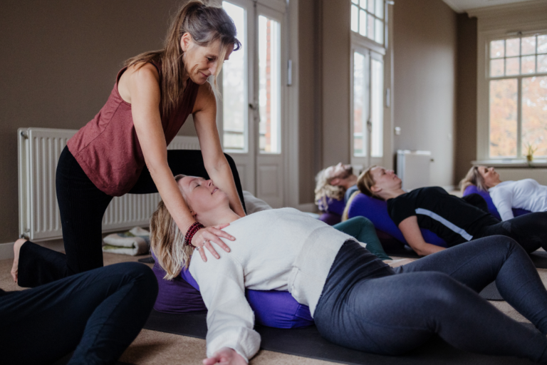

Veranderen door te doen, te bewegen en te verstillen
Yoga is van oorsprong een levensstijl, een gezondheids-bewegingsleer die zijn oorsprong in India vindt.
Het woord yoga is afkomstig uit het Sanskriet en vertalen we met ‘verbinden’. Het verbinden van lichaam en geest door middel van de ademhaling.
De basis bij yoga is het doen van bewegingen, ademoefeningen en meditatie zodat de geest (ons denken) tot rust komt en je je ontspannen voelt. Yoga helpt je om bewuster te worden van je lichaam en je lichaamshouding te verbeteren, want deze heeft effect op stress.
Door allerlei lichaamsoefeningen te doen en de adem te koppelen aan de beweging, open en beweeg je het lichaam zo dat er meer ruimte en adem vrij komt en alles kan stromen wat vast zit. Je daalt uit je hoofd en zakt als het ware terug in je basis in je bekken, je gronding, je natuurlijke staat van zijn. Stress en spanning kan zich volledig ontladen zodat jij vrijheid in jezelf kan ervaren. En dat is wat flow, plezier en innerlijke kracht geeft.
Je lekker voelen in je lijf van binnenuit, balans in je zenuwstelsel en meer rust in het hoofd!! En balans, rust en ontspanning is waar we in onze huidige maatschappij en ons leven steeds meer naar op zoek zijn. Onze 24-uurs maatschappij waar zoveel prikkels en afleidingen zijn.
Yoga is voor je leven en geen kunstje, de beoefening is een proces en vraagt tijd, geduld, aandacht en ontspanning!

De basis is al mijn lessen is om dieper in je lichaam te komen met de adem. Ruimte te maken van binnenuit, lichaamsbewustzijn te ontwikkelen, gaan voelen, uit je hoofd gaan, los te laten en leren te ontspannen.
Soms heeft het lichaam en de geest meer actie, inspanning en beweging nodig (yang, spierkracht) en soms meer rust, stilte, zachtheid en ontspanning (yin, bindweefsel, fascia stretch). Die balans, daar gaat het om; mentaal, fysiek, emotioneel en energetisch! Alles komt aanbod in de lessen.
Bij yin yoga ga je vertragen en breng je de aandacht naar binnen. Je richt je op het ontspannen van je spieren. Je blijft 3 tot 5 minuten in de houding zodat het bindweefsel (gelegen in de diepere lagen van je lichaam) wordt gestimuleerd en de gewrichten versterkt. De hydratatie die daarbij in botten, pezen en gewrichten plaats vindt, geeft je soepelheid.
De tijd dat je in een houding bent zorgt ervoor dat je goed en diep kan ademen wat ontspanning geeft in het para-sympatisch zenuwstelsel. Opgebouwde spanning en stress wordt los gelaten wat helend werkt.
Op energetisch niveau werkt yin yoga door op drukpunten en meridianen (energiebanen) in je lichaam waarbij chi (energie) weer door je hele lichaam gaat stromen en voedend is. De meridianenleer vindt zijn oorsprong in de Chinese geneeswijze waar de mens naast het fysieke lichaam ook uit verschillende soorten energieën bestaat die via meridianen door het lichaam loopt. Als deze energie uit balans raakt kunnen er lichamelijke of psychische klachten ontstaan.
Op fysiek niveau werken yin houdingen o.a in op heupen, onderrug en bekkengebied en helpt het bij onrust en stijfheid in je lichaam. We werken met bolsters, kussen en blokken zodat je de houdingen zo aan kan passen dat je het meest uit de houdingen kan halen. Dit maakt ook, dat je met een blessure altijd mee kan doen.
Yin yogahoudingen zijn zittende en liggende houdingen daarom geschikt en fijn voor iedereen! Veel mensen hebben baat bij deze rustige vorm van yoga.
gericht op volledige ontspanning – zenwuwstelsel regulatie
Bij Restorative Yoga beoefen je eenvoudige houdingen met ondersteunende middelen (zoals blokken, bolsters, dekens, riemen), waarbij diepe ontspanning ontstaat en je kan rusten in stilte zonder de zintuigen te prikkelen. Het zenuwstelsel wordt niet of nauwelijks geactiveerd. Je wordt uitgenodigd om los te laten. Zodat lichaam en geest kan herstellen. En ja, dat is magisch. Zoveel mensen zouden hier baat hij hebben.
| Vorm | Restorative yoga wordt geven in de vorm van een YOGA SPECIALS, kleine groepen max 8dln, eens in de zoveel weken op vrijdagochtend in mijn praktijkruimte bij in Ruurlo van 9.30 – 10.45. |
|---|---|
| Kosten | €25,-. Welkom, vol is vol. |
Vinyasa Flow Yoga is een vorm van yoga die we yang noemen; krachtig, energiek en dynamisch. Je beweegt in een flow vloeiend van de ene naar de andere houding en synchroniseert deze beweging met de ujjayi ademhaling. Je gaat uit je hoofd, uit je denken en zakt dieper in het lichaam om te openen en spanning/stress van binnenuit los te laten.
De les start begint met ademhalingsoefeningen en/of een korte meditatie om naar binnen te keren en te focussen. Na openingshoudingen die je lichaam opwarmen (met o.a. zonnegroeten), volgen in een creatieve flow staande, zittende en liggende bewegingen. Dit gedeelte van de les is fysiek (gericht op elastische weefsel in ons lichaam zoals huid en spieren die we snel en kort kunnen bewegen omdat ze veel bloed bevatten) en mentaal uitdagend. Kracht, flexibiliteit, concentratie, balans en uithoudingsvermogen worden aangesproken.
Tegen het einde van de les daal je af naar verstilling met yin yogahoudingen waarin we het bindweefsel (fascia) stretchen en druk aanbrengen op botten, pezen en gewrichtsbanden voor een doorbloeding in die gebieden, daar waar van nature minder bloed bevat en minder elastisch is. Omdat je niet in deze houdingen werkt, geeft dit aan het einde van de les een diepe ontspanning in het parasympatisch zenuwstelsel.
We eindigen de les met een diepe ontspanning (shavasana) voor rust en herstel van ‘body and mind’. Deze les is een mooie mix in- en ontspanning. Alle weefsels in je lichaam worden gezond gehouden!
Bij Slow Flow Yin Yoga beoefen je zachte vloeiende ritmische bewegingen voor flexibiliteit en flow in je spieren, in combinatie met zittende en liggende yin yogahoudingen voor flexibiliteit en strekking in het bindweefsel. Je brengt tijd en ontspanning door zowel in, als tussen de houdingen. Er is veel aandacht voor de adem en het beoefenen van mindfulness. De les wordt afgesloten met een fijne eindontspanning voor rust en herstel van je lichaam.
Qi betekent adem, energie en Gong betekent oefenen. Het zijn oefeningen vanuit de Chinese gezondheidsleer die je lichaam gezond houden en je hoofd tot rust brengen. Je oefent hele fijne zachte eenvoudige herhalende bewegingen die geschikt zijn voor iedereen. Je werkt met de energie van de adem die er altijd is. Ook beoefen je opmerkzaamheid (mindfulness) en goed luisteren naar het lichaam.
In een 1:1 yogasessie werken we aan fysieke en mentale herstel om weer in balans te komen. Samen kijken we wat je nodig hebt. Ik leer je yoga oefeningen waar jij thuis mee verder kan. Therapeutische yoga klinkt misschien ‘zwaar” maar is het niet. Een 1:1 sessie kan een cadeau zijn voor jezelf om op adem te komen of weer je eigen kracht te gaan voelen!
Individuele yoga is o.a. erg geschikt voor mensen met blessures, gewrichtspijnen, artrose, fybromyalgie, (over)vermoeidheid, migraine, herstel van ziekte en bij stress & burnout. (zie ook individuele lessen)

Heb je het idee dat je veel ‘aan’ staat, gestrest voelt, geleefd wordt, je gedachten maar doorrennen en veel prikkels ervaart die je onrustig maken? Doe dan mee, of kom eens proberen wat meditatie voor jou kan betekenen voor meer innerlijke rust, focus, overzicht en inzicht in jezelf en de omgeving, stress hantering en compassie.
Tijdens de meditatie* is het de beoefening om met aandacht de buitenwereld te laten voor wat die is en naar binnen te keren wat zich daar afspeelt. Je stapt uit de doe-modus naar het huidige moment. Je leert te zien, te observeren en met vriendelijke interesse te registreren wat zich op dat moment afspeelt op fysiek, mentaal en emotioneel niveau. Zonder dat je daarbij hoeft te analyseren of iets te vinden van wat je waarneemt. Het gaat om innerlijk achterover te kunnen leunen en de geest te laten rusten wat ontspanning geeft van binnenuit.
We starten met aankomen, ademwerk en simpele yoga bewegingen om hoofd, nek, schouders en rug los te maken zodat je fijn en ontspannen kan zitten op een stoel of kussen. Daarna gaan we de stilte in, deels begeleid.
*we beoefenen vipassana meditatie een techniek vanuit het boeddhisme ook wel mindfulness – inzichtmeditatie genoemd en belichaamd mediteren met de ‘ground’ methode.
Tijdens mijn studententijd was ik zo op zoek naar rust in mijn drukke en altijd en eeuwig aanstaande hoofd. Ik zat iedere dag in de sportschool, liep veel hard, maar dat hielp me niet om rustiger en mentaal, fysiek, en emotioneel in balans te komen. Altijd was er onrust in mijn systeem (zenuwstelsel). Tot dat een vriendin zei “je moet eens naar een yogales gaan, dat doet je vast goed”.
Na de 1e les ben ik er nooit meer van weg geweest. Al heel snel merkte ik de krachtige uitwerking van de oefeningen op mijn lichaam en geest. Meer helderheid en rust in mijn hoofd en meer flexibiliteit en bewustwording van mijn lichaam. En misschien wel het allerbelangrijkste; ik leerde te ademen met dat wat aanwezig is op dat moment en me daarin te ontspannen. Yoga is nu ‘a way of life’; Yoga is living- breathing and ever-changing.

In 2004 startte ik met mijn eerste Yoga docenten opleiding, Power Ashtanga Yoga. Hierna volgden vele andere opleidingen; *Yin Yoga, *Yang Flow- Vinyasa, *Yogatherapie*, Restorative Yoga, verdiepingscursussen en masterclassen. Een jaar yogadocent zijn in Nepal (2012-2013) heeft mijn kennis van klassieke integrale yoga en boeddhisme verdiept. Ook heb ik daar de volledige opleiding tot Thaise Yoga Massage goed afgerond.
Inmiddels ben ik ook gecertificeerd ademcoach. Ik blijf gefascineerd door de beweging van het lichaam, ademwerk en meditatie. In 2024 volgde ik de jaaropleiding ‘Belichaamd mediteren’ met de Ground methode van Michael Verlouw, een verdieping in boeddhistische psychologie; een ware verdieping naar thuis komen in het lichaam. Jaarslijk ga ik een week de stilte in om hiermee in contact te blijven.
In de loop der jaren heb ik ervaren dat het yogapad opgaan een onvoorstelbare kracht en persoonlijke ontwikkeling en verandering op geestelijk en lichamelijk niveau teweeg brengt. Yoga houd mij gezond en hoofd, hart en hand in balans, vrijheid van binnenuit, dat geef ik anderen ook graag mee. Ik hoop in mijn lessen mijn passie voor yoga, meditatie en ademwerk te delen en op een inspirerende manier en persoonlijke manier over te dragen.
Wil je weten waarom ik ooit met yoga ben begonnen; kijk dan op: https://www.yogaonline.nl/blog/levensles-marion-werger/
“With yoga, not only your body should become flexible. Your mind and emotions, and above all your consciousness should become flexible”
Bij iedere les of sessie is het mijn doel om mensen een gevoel van ’thuis komen’ te geven. Heb je een vraag of wil je een afspraak maken? Neem gerust contact met mij op.